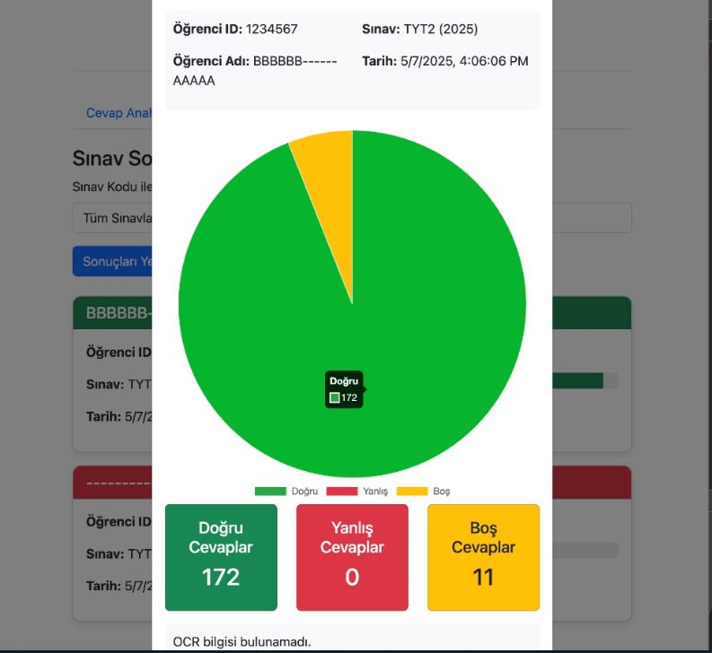

Projects
KALPLERE ULAŞ – Web Site
A charity organization website developed with HTML, CSS and JavaScript. It offers a user-friendly interface, event promotion and donation opportunities.
HTMLCSSJavaScript

OMR-OCR Grading System
Web-based optical form evaluation system. Processes student answers and information with OMR/OCR technologies and stores them in a PostgreSQL database.
PythonFlaskFastAPIPostgreSQL
YouTube UI (Vue.js)
A simple video listing app with YouTube-like interface built using Vue.js.
Vue.jsHTMLCSS
Digital E-Portfolio Website
This is my personal website developed as a final-year computer engineering student. It presents my academic background, skills, and achievements using a responsive and modular design.
HTML5CSS3JavaScriptGitHub PagesGit

Smart Home Automation System
It is a smart home system developed with C++. Lights, cameras and thermostats can be controlled remotely. Observer and Factory patterns are used.
C++Design Patterns